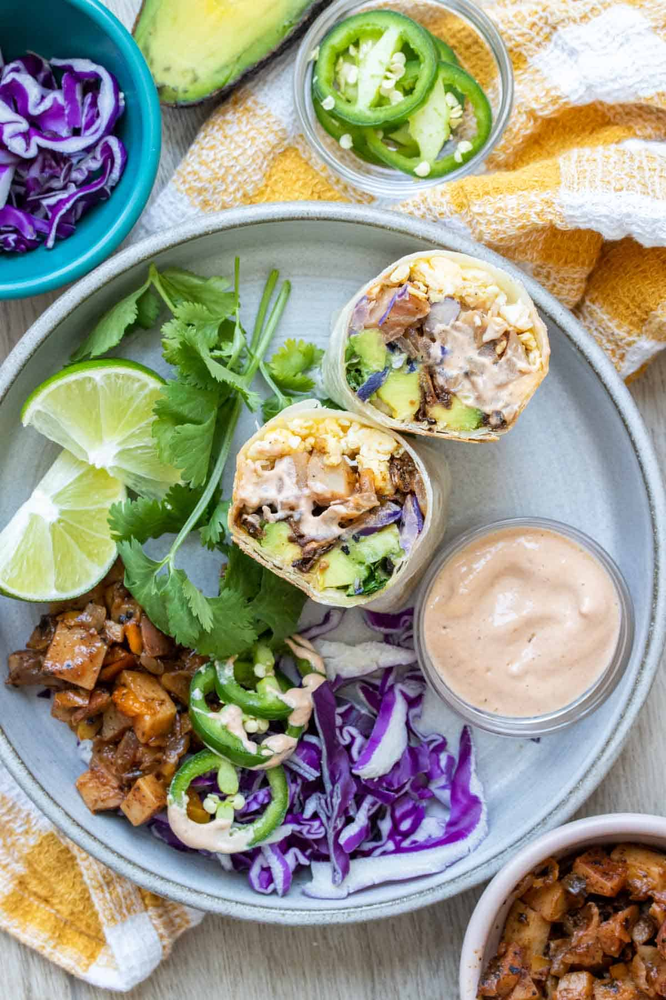

BBB - Best Breakfast Burrito

Description
Breakfast burritos make a perfect breakfast. They can easily be customized
and prepped ahead for a quick morning meal!
When you are able to prep breakfast the night before, it makes the
mornings go so much smoother. Starting the day with a meal filled with
protein and veggies gives you the energy to tackle all that's ahead!
Ingredients
- Egg
- Portobelo bacon (mushrooms)
- Salt
- Breakfast potatoes
- Black beans
- Tortillas
- red onions
- avocado
- cream sauce
- cheese
- hot sauce/halapegno
Steps
-
Cook the crumbled tofu or vegan egg over medium heat. When almost done,
add the bacon and mix in. Put into a bowl and set aside.
-
If you want the cabbage wilted a little, add to the pan and saute with
broth or oil until just wilted. You can also use it cold, but this is a
good option too.
-
Warm the tortillas by wrapping them in a damp paper towel and heating in
the microwave for 30-45 seconds. Keep heating in 15 second increments to
get them soft and pliable.
-
Fill with ingredients of choice, we used ¼ cup of the egg mixture,
potatoes and beans. Then topped with all the fixings.
-
Fold in the sides, then bring the bottom over the top of the ingredients
and tuck around them tight as you roll the burrito closed.
-
Place seam side down on a heated pan over medium low and grill for about
3-5 minutes until the edge is sealed. This helps make eating the burrito
easier so it doesnt fall apart, and also gives some great texture.
- Enjoy!